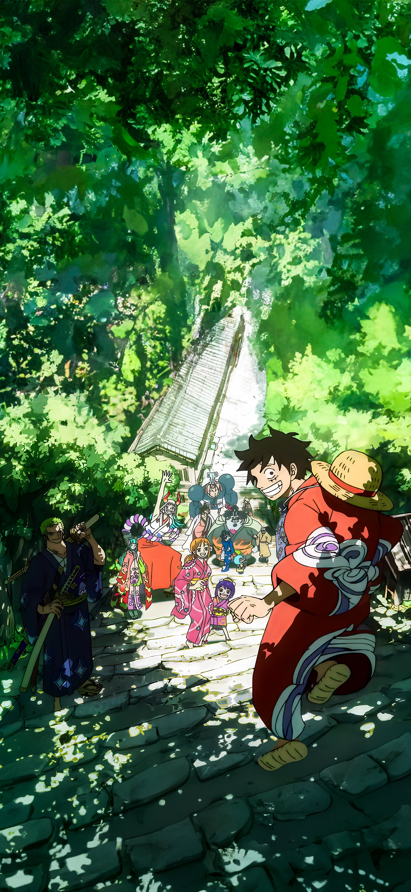

《ONE PIECE》（日语：ONE PIECE／ワンピース；中文译名：海贼王、航海王），
是日本漫画家尾田荣一郎创作的少年漫画，自1997年7月22日起在集英社旗下杂志《周刊少年Jump》连载[1]、同年12月发行第一册单行本，
至今已出版107册单行本。并在漫画杂志《周刊少年Jump》中长期占据人气榜的第一名，单行本在日本以外，亦已有30多个国家翻译版本发行。
另外也衍生出诸多衍生作品，包括同名的电视动画、电影、小说和电子游戏等周边媒体产品。

创作海贼故事是尾田荣一郎长久以来的梦想，他小时候一直很好奇为什么没有什么漫画以海贼为主题，他顶多只知道有《北海小英雄》这部动画。他认为男孩长到某个年纪后应该就会想要出海寻宝才对。尾田从小就很想看海贼的漫画，那个时候他对自己说，如果要自己画的话，那就一定会画海贼的故事。不管作品卖不卖得掉，他都是作好了心理准备才会这么选择的，纯粹就是他自己想看而已 [3]。
尾田荣一郎在初一时，第一次画了海贼漫画，而尾田对海贼冒险所抱着的想象太丰富，就一本笔记本也画不完。他认识到用“一期完”的形式来画海贼漫画是不可能的，于是他决定要在《少年JUMP》上连载海贼漫画 [4]。
1997年，尾田荣一郎创作了海贼漫画《Romance Dawn》，这部一话完结的短篇漫画正是《航海王》的创作原型，后来这个名字还被《航海王》第一话作为副标题使用。当然，虽然两部漫画的主人公都叫路飞，性格却判若两人，剧情也并不相同 [3]。
然而，《Romance Dawn》最初因页数关系没法《少年JUMP》里刊登，于是他将《Romance Dawn》的内容删减，用“一期完”的形式在《少年JUMP》的本志和增刊上刊载了它，因为尾田当时已经决定将《Romance Dawn》作为《航海王》的雏形，他也准备以《航海王》的形式书写另一个版本的《Romance Dawn》。怀着两部海贼漫画，尾田荣一郎辞去了和月伸宏的《浪客剑心》助理一职，向连载方面发展 [4]。连载期间
尾田荣一郎在《少年JUMP》上连载了《ONE PIECE》。尾田荣一郎小时候是看着鸟山明的《龙珠》长大的，那部作品对他影响巨大。当时尾田最大的心愿就是能在单行本中看到更多的集数。于是当他自己成为漫画家以后，坚持要让《航海王》的单行本分量更足。他小时候还有一个“打击”，他曾天真地以为《龙珠》是鸟山明一个人画的，但实际上漫画家都有助手协助。
尾田第一次得知这个真相的时候，感觉“受骗了”。这个“打击”让他刻骨铭心，所以他成为漫画家之后竭尽所能不让孩子们失望。《航海王》画面中所有动态的部分都是尾田亲笔画的，助手只做一些很简单的工作。这是极少见的。
虽然尾田把这个故事画了十多年了，但的确从一开始他就想好了结局，这个结局只有几个主要编辑知道，绝不能透露。不过，虽然结局是已知的，中间的过程却未知，会有些什么故事，尾田老师自己也不知道。
尾田的煽情功力基本是他自己的，编辑在这点上很少能帮到他。编辑的作用是当一个读者，如果编辑没有被感动，那么尾田就要重新编他的故事。 [5]
关于作息时间，尾田在一次采访中透露：“每天凌晨2点睡5点起，每天共睡3小时。画完原稿后正好有一天可以休息，就睡一整天。”尾田已经这样坚持了十几年 [3]。
尾田荣一郎最初的设想是用5年时间来完成《航海王》：最初的1年募集伙伴、冒险3年左右、最终章1年 [6]。